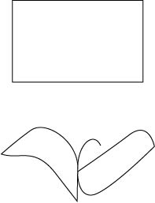

first, pick the rectangle tool from the toolbar on the left. Scale it so that x is 518.5 px and that y is 63.5 px. Next, pick the pen tool from the right toolbar and start a path midway down from page like you are creating a stick figure body, instead of bringing it all the way up to the square move it to the right so it creates a hook in the middle. Next, use the pen tool again and start a new point on the right of the hook and create and oval with a point making it look like a big fin for one arm. Next, a similar technique for the left fin but it instead has two points one connecting to the lowest point of the hook line, and the other almost symmetrical to the point from the right fin. Instead of looking like a fin it should be bigger and resemble the head of a penguin. After that it should be complete to look like a rentangle with two weird looking arms.
